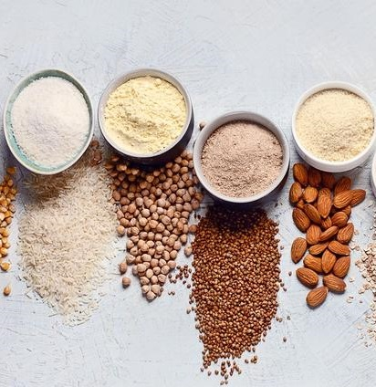
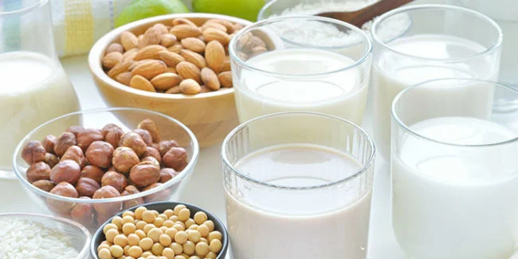
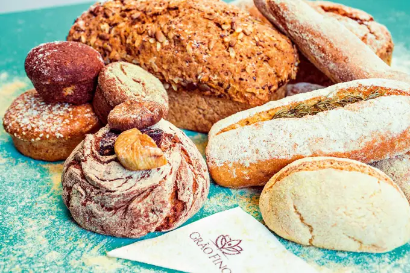

Alergia ou intolerância à lactose e ao glúten?
Muito se fala em alergia ou intolerância à lactose e ao glúten. No entanto, é importante saber a diferença entre essas duas situações.
A alergia ao leite e derivadosna verdade é uma resposta exagerada do sistema imunológico a uma proteína específica do leite da vaca. Por outro lado, a intolerância à lactose dificuldade do corpo de processar a lactose. Isso geralmente se deve à quantidade insuficiente da enzima lactase no organismo.
Essa deficiência da enzima lactase pode ser causada por uma distúrbio congênito, quando a pessoa já nasce sem a capacidade de produzir lactase. Porém, o mais comum é que a intolerância se desenvolva por outros motivos. Entre eles, uma baixa produção de lactase devido à mudança de hábitos alimentares. Outro caso é quando há um processo inflamatório ou infeccioso nas células intestinais responsáveis por produzir tal enzima.
-
Tipos de farinha sem glúten
É importante conhecer alguns substitutos da farinha de trigo. Confira abaixo a lista de farinha sem glúten.
-
Tipos de leite sem lactose
Existem vários tipos de leite sem lactose. É válido conhecer os tipos, experiementar seus sabores e fazer a substiruição sempre que necessário.
-
Produtos sem glúten e sem lactose
Hoje em dia, existem vários produtos sem glúten e sem lactose. Como podemos observar na imagem, tem diversos tipos de pães, biscoitos, macarrão entre vários outros produtos deliciosos.